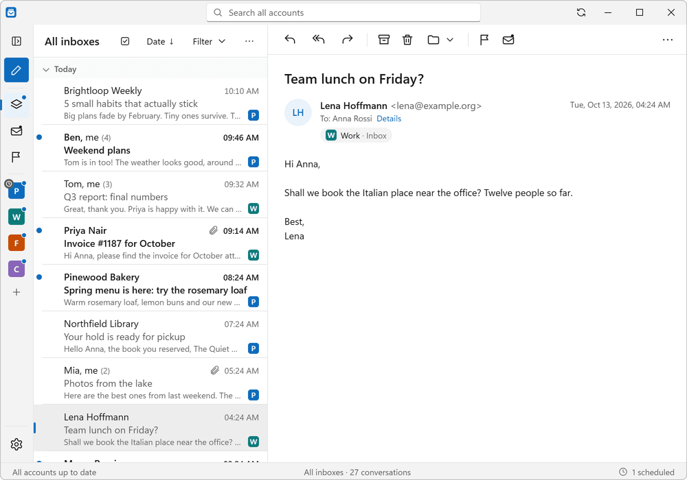
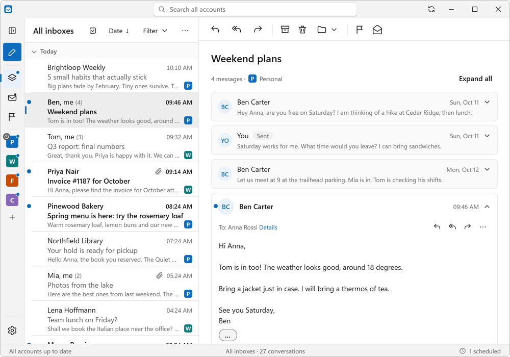
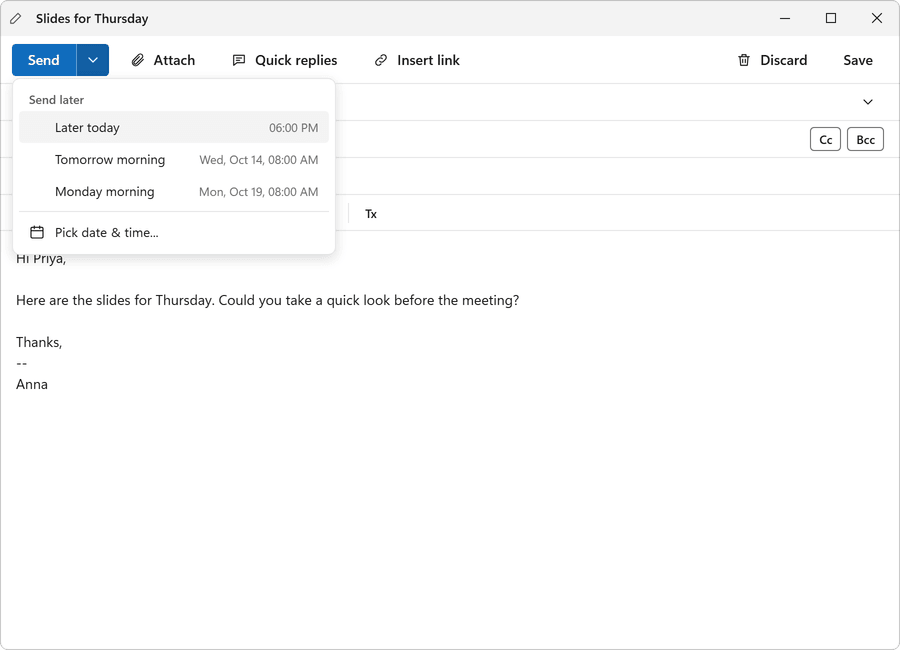
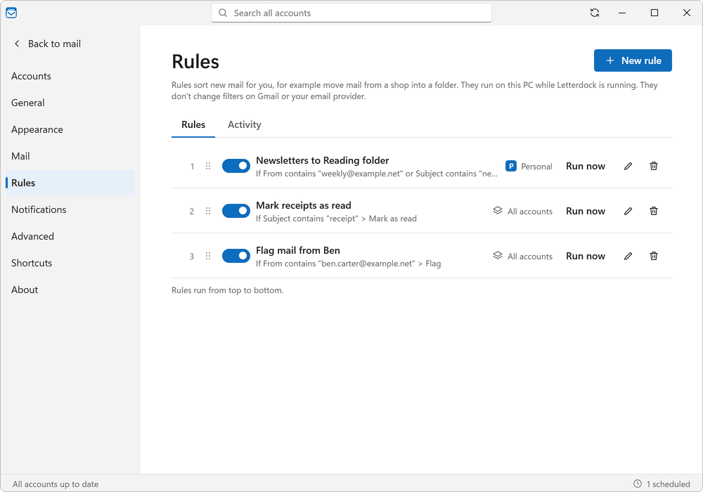
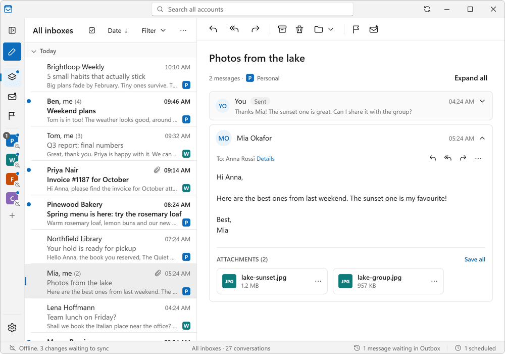
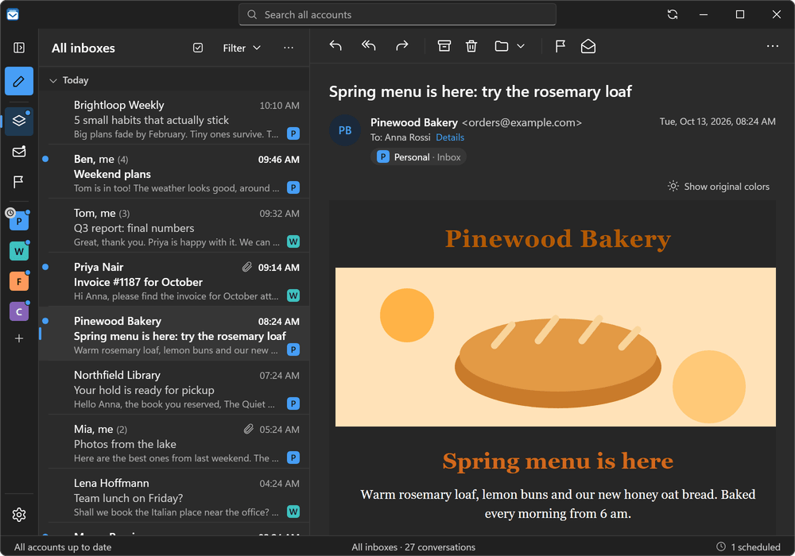
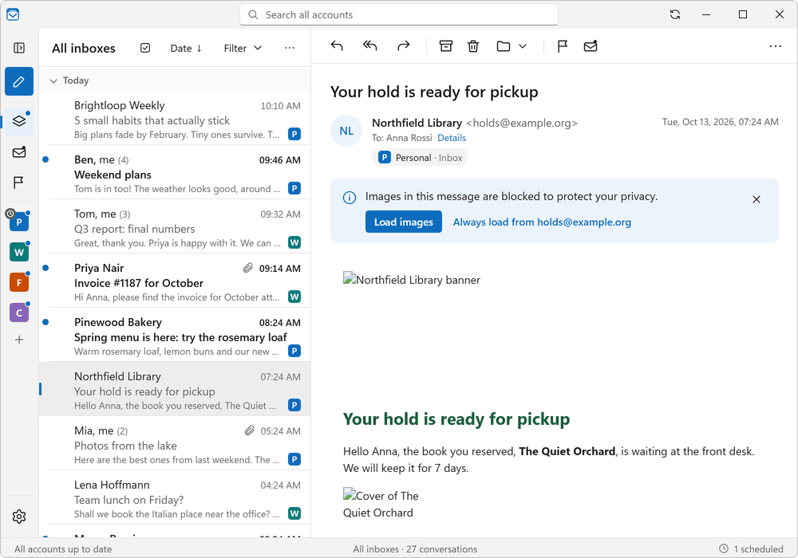
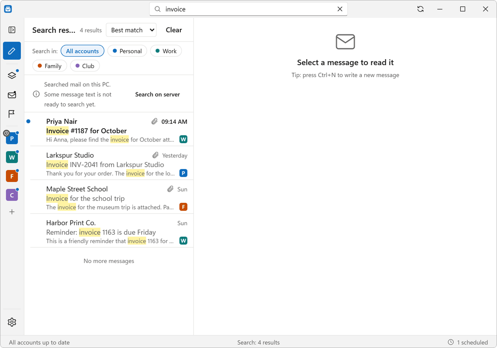
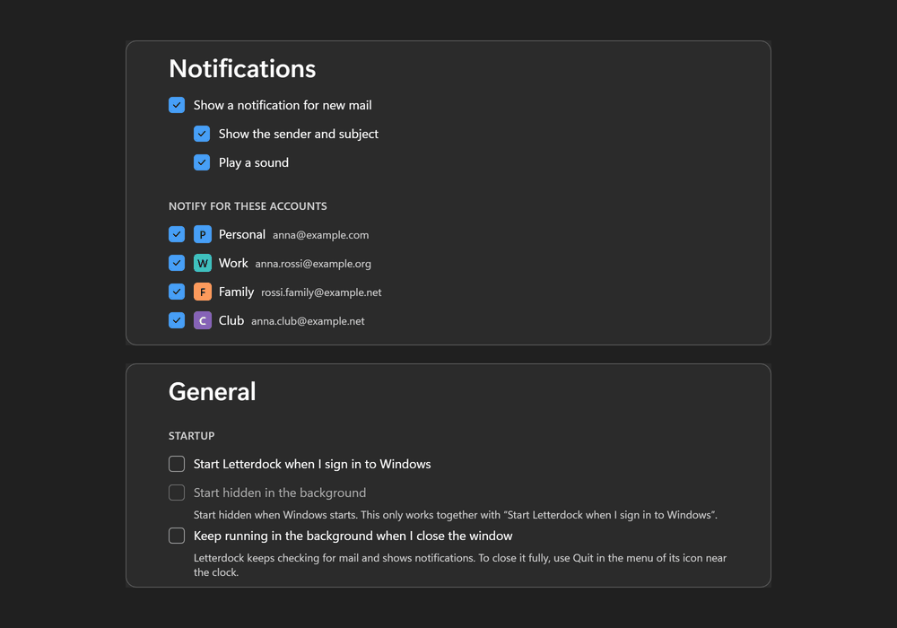
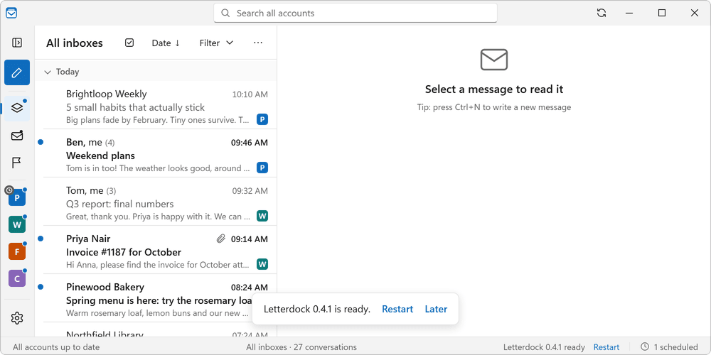

One inbox for everything
See mail from all your accounts in one list. Small colored badges show which account each message is from.
No limits. No subscription. Your mail stays on your PC.
Free and open source (MIT) · Windows 10 and 11, 64-bit · about 100 MB
Not sure it is safe? See how to install. If the download does not start, open the download page.
Add 2 accounts or 20. Many other apps stop at one or two unless you pay. Letterdock never asks.
Your mail is saved on your own PC. There are no Letterdock servers, no accounts with us, and no tracking.
Anyone can read the code and check what it does. It is free under the MIT license, today and later.
No ads. No upsell. No sign-up.
Everything you need for daily email, and nothing you do not.

See mail from all your accounts in one list. Small colored badges show which account each message is from.

Replies are grouped into one tidy thread, even when they come from different folders.

Write now, pick a time, and Letterdock sends it for you. Your PC must be on and the app running at that time.

Move, flag or mark mail as read automatically. For example, send all newsletters to one folder.

Read and search mail you already downloaded with no internet. Replies you write wait in the outbox and go out when you are back online.

Even bright white emails turn dark, so your eyes stay comfortable at night. Turn it off per message if the colors look wrong.

Pictures in emails are blocked until you allow them. This stops senders from seeing when you open a message. Allowed pictures are saved on your PC so they load fast later.

One search box looks through every account at once.

Get a Windows notification for new mail. Close the window and Letterdock keeps checking from the tray.

Letterdock tells you when a new version is ready and installs it in one click.
Letterdock uses a standard way to talk to mail services called IMAP. Almost every email provider supports it.
Gmail needs an app password, not your normal password. It takes about two minutes.
Sign in with Microsoft is on the way. Microsoft does not allow normal passwords for these accounts, so they cannot be added yet.
Create an app password in your Yahoo account security page, then use it in Letterdock.
Create an app-specific password in your Apple Account at account.apple.com, then use it in Letterdock.
Work, school, or your own domain: type your address and Letterdock tries to find the server details for you. If it cannot, you can enter them yourself. Your provider can tell you what they are.
It takes about a minute. You do not need admin rights.
Letterdock-Setup.exe in your Downloads folder.This is normal. Letterdock is a small free project and the installer is not signed with a paid certificate yet. Windows shows this for all new apps like this. To continue: click More info, then click Run anyway.
Some Windows 11 PCs have Smart App Control turned on. It can block apps that are not signed, and it has no ‘Run anyway’ button. You can turn it off in Windows Security, under App and browser control, then Smart App Control settings. Note: after you turn it off, Windows will not let you turn it back on without resetting the PC. If you do not want that, you can build Letterdock from source (see GitHub).
Want to check the file first? Every release is built on GitHub from the public code. See the releases page and the build page.
Your mail, accounts and settings are stored on your PC in %APPDATA%\Letterdock. Passwords are kept in Windows’ secure storage. Read the code.
This website has no cookies, no trackers and loads nothing from other sites.
Yes. There are no paid plans and no limits on accounts. It is open source under the MIT license.
Not right now. Letterdock is for Windows 10 and 11 (64-bit) only.
The installer is not signed with a paid certificate yet, so Windows is careful. The code is public and anyone can check it. See How to install.
On your PC only. Your mail also stays on your provider’s server, as always. Removing an account in Letterdock does not delete mail on the server.
Google does not allow normal passwords in desktop apps. An app password is a separate 16-letter code just for Letterdock. You can delete it any time in your Google account.
‘Sign in with Microsoft’ is coming. We will announce it on GitHub releases.
Open an issue on GitHub. Please do not include passwords or private email text.